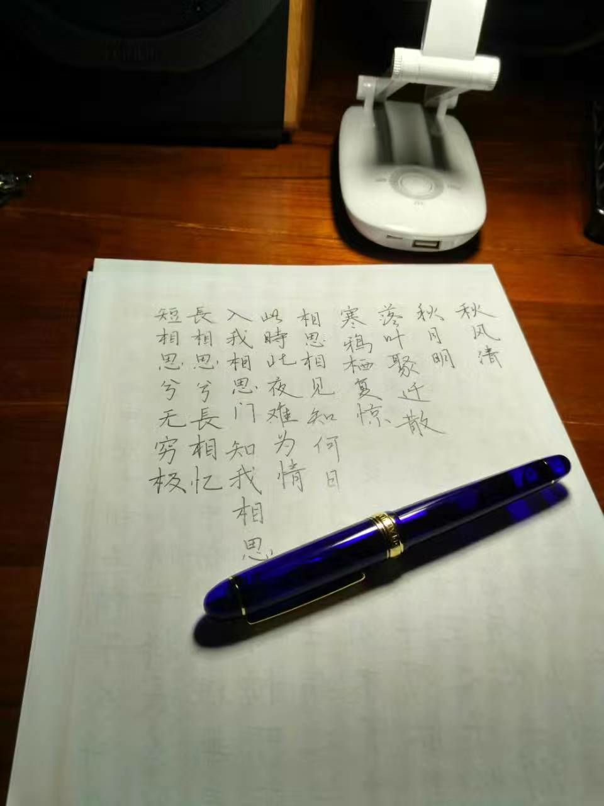
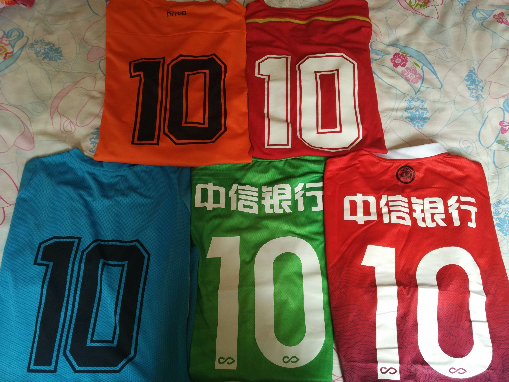
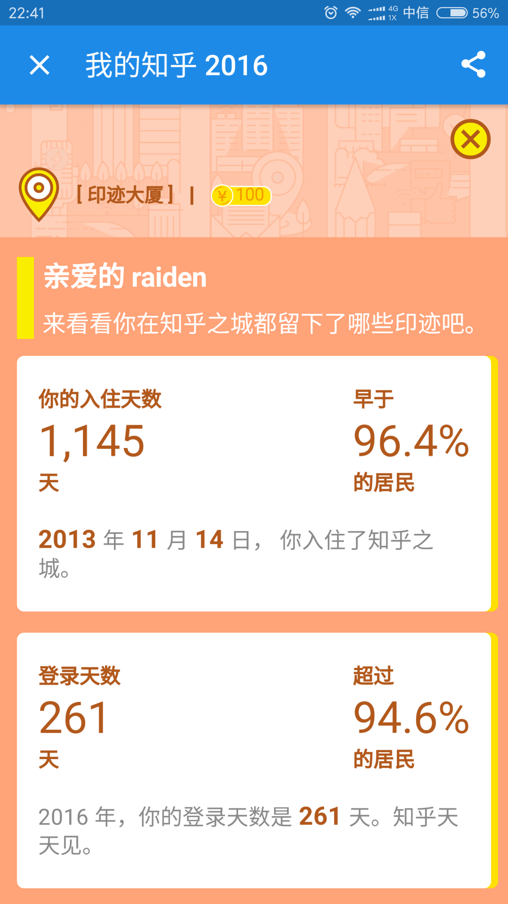
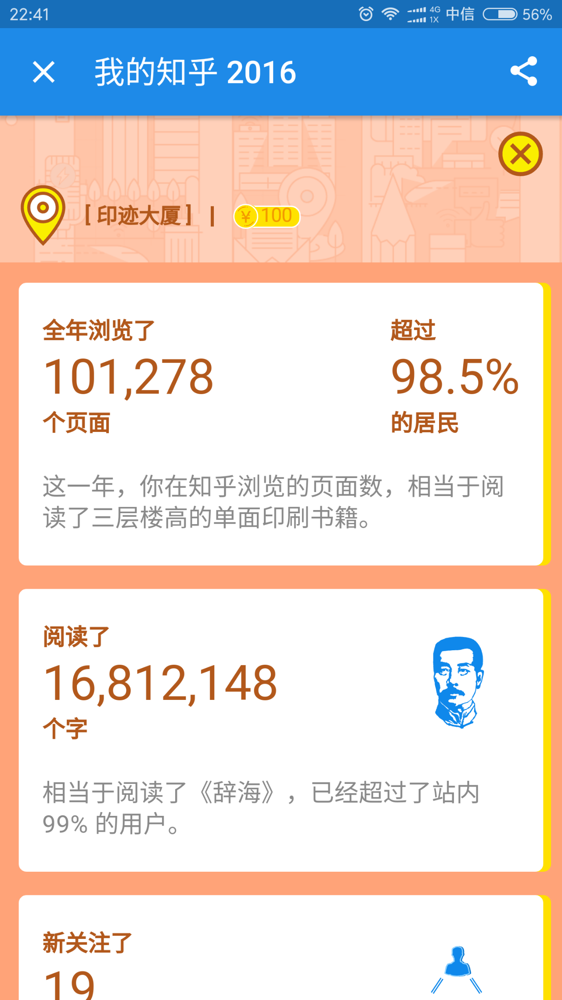

正文: 工作十年，孩子五岁。
踢球和健身，频率分别是每周一次和每周三次左右，都保持了十年以上。
每天通过扇贝背单词，目前打卡快八百天，以后还会坚持下去，预计到一千天的时候逐渐改成例行口语和听力学习。
去年九月想买一支写乐长刀研，鉴于字写得比较差，开始练字，到现在水平还配不上那支笔，希望年底可以。
作为天赋有限的普通人，达不到多高的水平，能做的也就是不断努力超越自己。就像下面扇贝截图上说的“each day leads to a change”，大家共勉。


刚跳槽不久，谨以下图展现对足球和原公司的感情（均为在职期间队服）

另：如果看知乎也算的话，那么这也是个一直在保持的习惯。虽然没有五年那么久，因为知乎还不到五岁。


官方统计的去年一年阅读了上千万字，知乎的确在一定程度上改变了我这个人